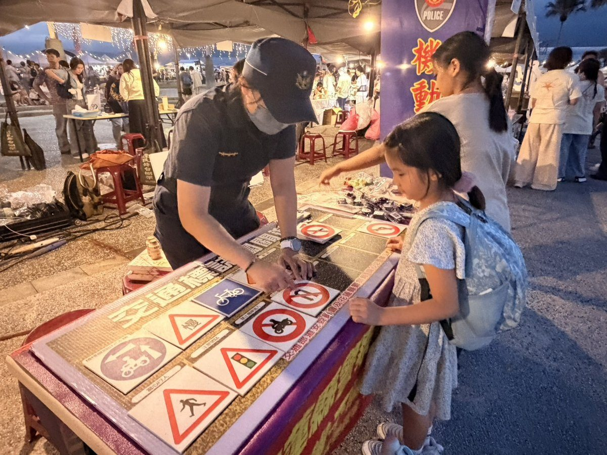
花蓮新城警進駐七星潭市集 寓教於樂推廣交安反詐提升警民意識
花蓮新城警分局在七星潭「神仙補習班928市集」設置攤位，以「交通號誌16宮格遊戲」及反詐騙案例解說，互動式推廣交通安全及防詐意識，提升警民合作，共同打造安心生活環境，守護用路與財產安全。…
閱讀全文 →
花蓮新城警分局在七星潭「神仙補習班928市集」設置攤位，以「交通號誌16宮格遊戲」及反詐騙案例解說，互動式推廣交通安全及防詐意識，提升警民合作，共同打造安心生活環境，守護用路與財產安全。…
閱讀全文 →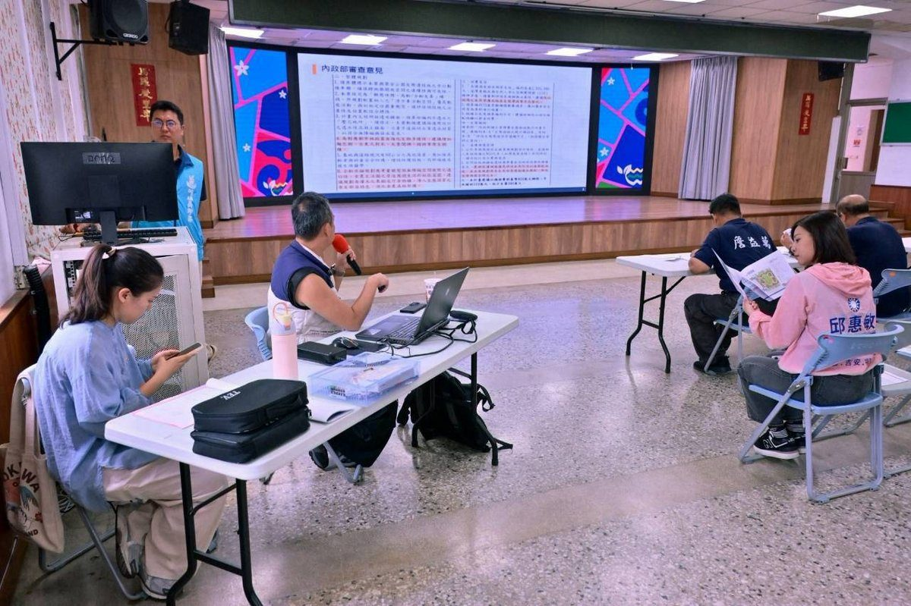
吉安鄉公所向行政院申請無償撥用永安村太昌段1304地號約3,649平方公尺閒置公有地，獲內政部國土管理署補助510萬元、鄉代會支持自籌340萬元，總經費850萬元打造0至100歲全齡共融休憩場域，規劃親子草坪、兒童滑步車…
閱讀全文 →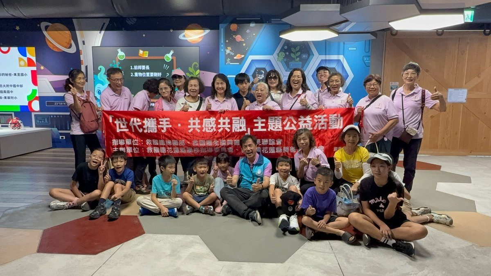
吉安鄉花蓮縣休閒園區今日迎來「世代攜手・共感共融」公益活動，吸引逾60位祖孫同樂，透過健康律動、雙人闖關與跨域思維互動館的機器人舞蹈體驗，共創跨世代溫暖回憶。…
閱讀全文 →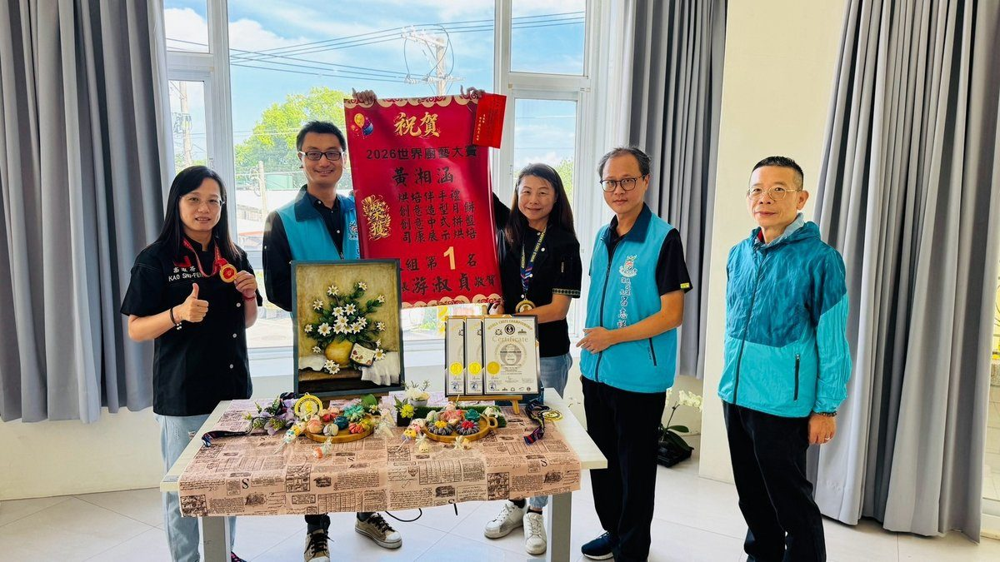
花蓮JIE JIE甜點團隊出戰第5屆WCC世界廚藝大賽，黃湘涵老師與花崗國中牛駿彬以花蓮在地食材融入烘焙創作，勇奪4金2銀佳績。吉安鄉長游淑貞親頒紅榜肯定選手精湛技藝揚名國際。…
閱讀全文 →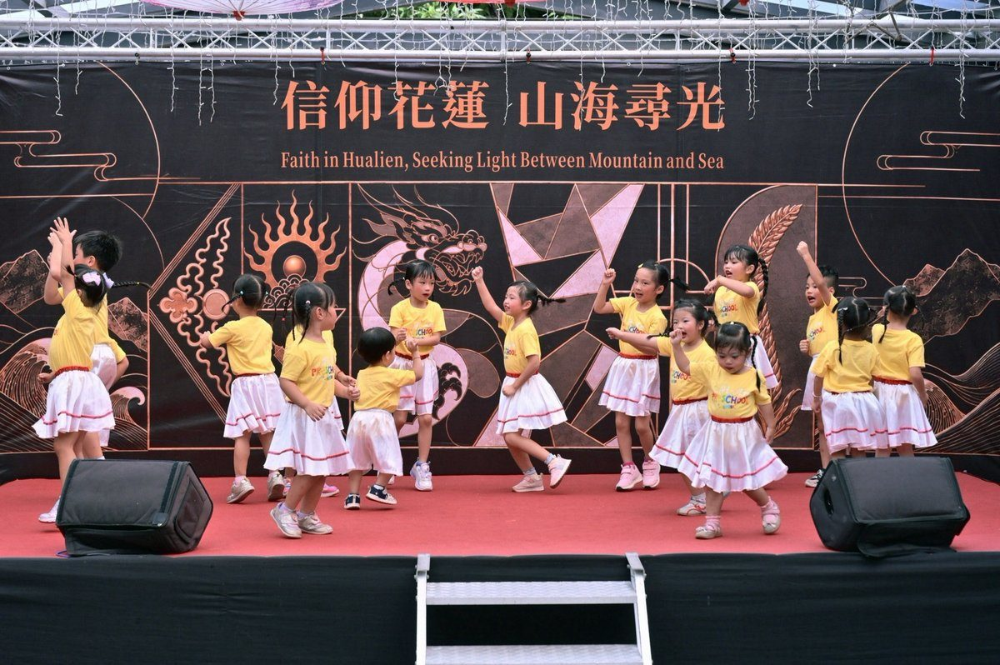
「信仰花蓮・山海尋光」成果展自即日起至10月7日在吉安好客藝術村展出，歷時近三年調查花蓮寺廟與教堂文史，吉安鄉長游淑貞與縣長徐榛蔚邀民眾走讀七大宗教路徑。…
閱讀全文 →
2026中秋連假首日返鄉出遊車潮湧現，花蓮新城警分局自9月25日起全面部署警力，針對台9線、台8線及七星潭加強交通疏導與機動巡邏，守護鄉親行車平安。…
閱讀全文 →
吉安鄉稻香社區發展協會以女力培力與數位共融成果，自全國競爭中脫穎而出，榮獲衛福部金卓越社區「服務與創新獎」，花蓮縣政府與吉安鄉公所團隊24日下午專程前往張貼紅榜祝賀。…
閱讀全文 →吉安鄉立幼兒園23日晚間在大草皮熱鬧舉辦「月光童樂・環保中秋營火晚會」，鄉長游淑貞帶領公所團隊陪伴親師生逾150人歡聚，共享減塑環保與溫馨團圓之夜。…
閱讀全文 →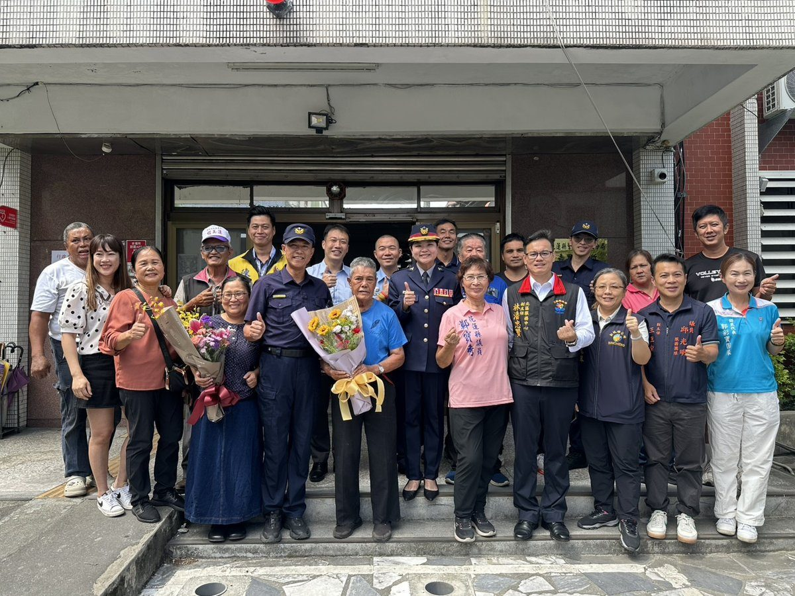
花蓮縣警察局新城分局24日舉行嘉里派出所新任所長布達典禮，由分局長賴楷淳親自主持，新任所長陳文雄正式履新，地方各界仕紳熱烈出席觀禮祝賀。…
閱讀全文 →花蓮慈濟醫院與衛福部花蓮醫院日前聯合舉辦伊波拉病毒感染跨院轉診實兵演習，模擬境外群聚疫情與極端重症處置，全面提升東部醫療網應變韌性。…
閱讀全文 →花蓮慈濟醫院心臟內科陳郁志醫師提醒，診間單次血壓偏高常因緊張造成「白袍症候群」，民眾應落實「722」居家量測，掌握真實血管彈性與健康趨勢。…
閱讀全文 →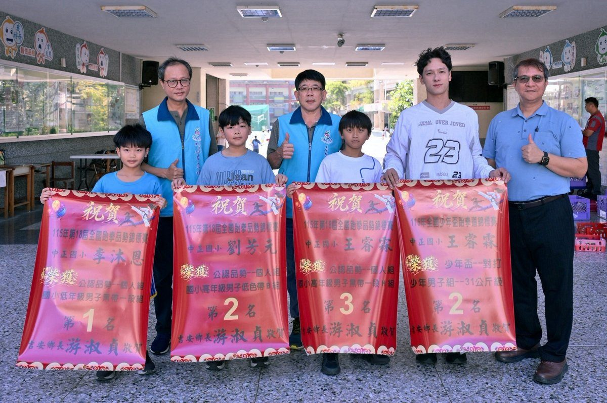
花蓮中正國小跆拳道小將在115年第18屆全國跆拳品勢錦標賽及全國少年盃錦標賽創下奪金摘銀佳績，吉安鄉公所前往學校頒贈紅榜與獎勵金，鄉長游淑貞表示將持續深化基層體育發展與培育政策。…
閱讀全文 →
中秋節月餅與烤肉油膩又多糖？花蓮慈濟醫院營養師謝淳雅特別設計「毛豆豆漿卡士達醬」配方，結合高濃度豆漿與富含膳食纖維的毛豆，不僅口感清爽，更具備高抗氧化營養。這款低脂健康的創新沾醬能提供高飽足感並延緩糖分吸收，助您在中秋連…
閱讀全文 →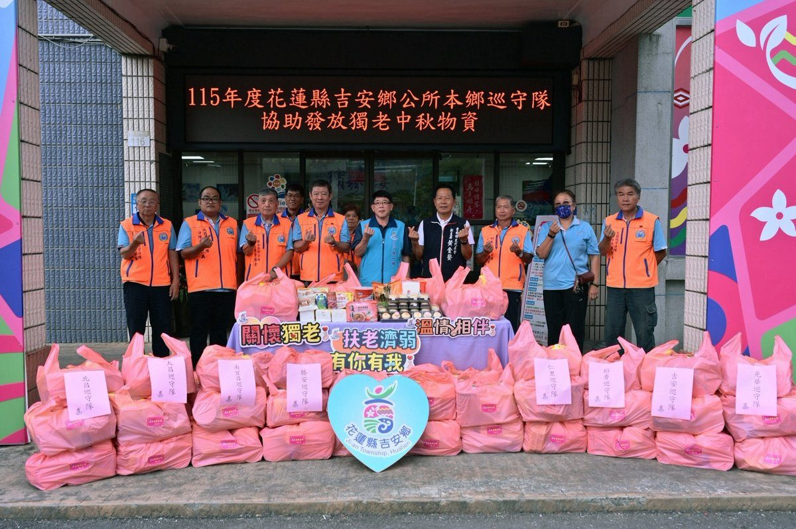
吉安鄉公所攜手各村「超人巡守隊」發起中秋送暖行動，動員巡守專車將節慶物資親送至全鄉270位獨居長者與27戶弱勢家庭手中，游淑貞鄉長感謝協勤民力公私協力，織密基層社區照顧網。…
閱讀全文 →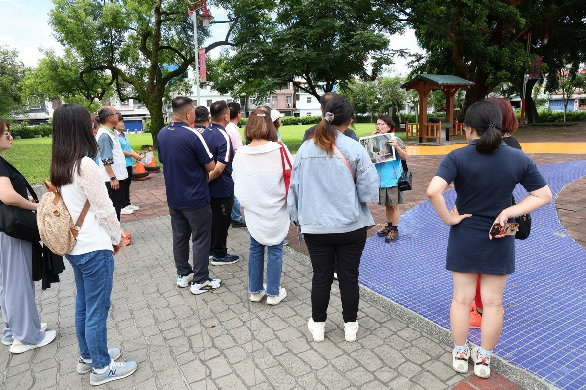
吉安鄉公所10月份推出「來去吉野—走讀吉安百年時光」系列活動，透過數位科技、徒步走讀與單車巡禮三大主題，由東華大學郭俊麟副教授及田清華前校長帶領鄉親走訪吉野開村碑與慶修院，深入探索吉安百年聚落歷史。…
閱讀全文 →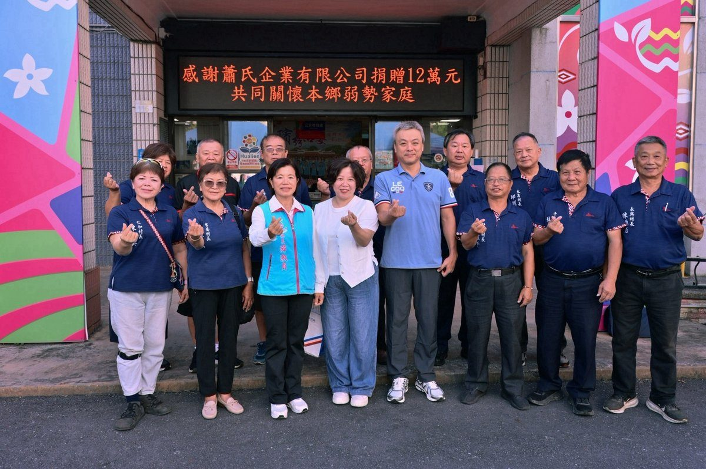
深耕花蓮的蕭氏企業捐贈12萬元中秋關懷禮金，援助吉安鄉19村共100戶弱勢邊緣家庭。吉安鄉長游淑貞代表鄉親頒贈感謝狀，由衷致謝企業長年認養路燈與熱心公益的無私大愛。…
閱讀全文 →
吉安鄉公所盛大辦理韌性社區學習營，鄉長游淑貞率領巡守、義警、義消及志工等逾550位協勤民力齊聚，透過交通、防災及識詐多元課程扎根基層安全，打造幸福韌性家園。…
閱讀全文 →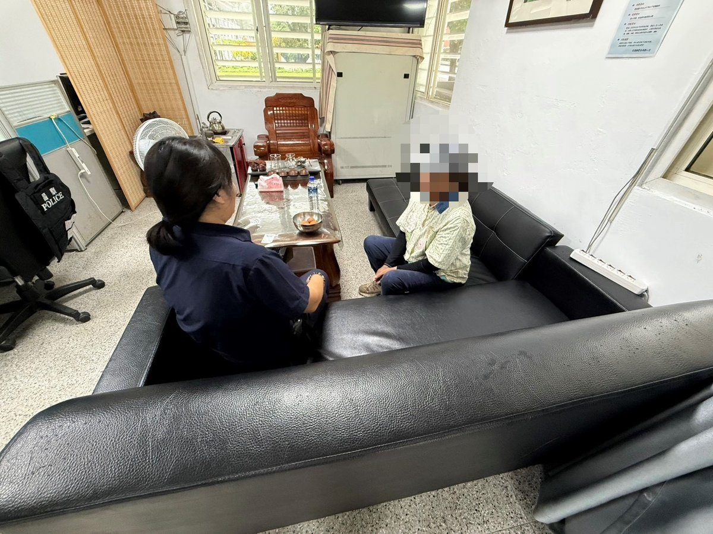
花蓮一名失智長者欲往玉里卻誤入太魯閣燕子口隧道，新城警分局富世派出所員警獲報迅速尋獲，悉心提供飲食並安撫照料，順利協助長照機構及家屬接回平安團圓。…
閱讀全文 →花蓮新城鄉臺9線178.5公里處20日傍晚發生大客車追撞自小客車引發連環推撞，波及兩輛轎車並造成4人受傷。新城警分局馳援處置，駕駛酒測均為零，全案肇因調查釐清中。…
閱讀全文 →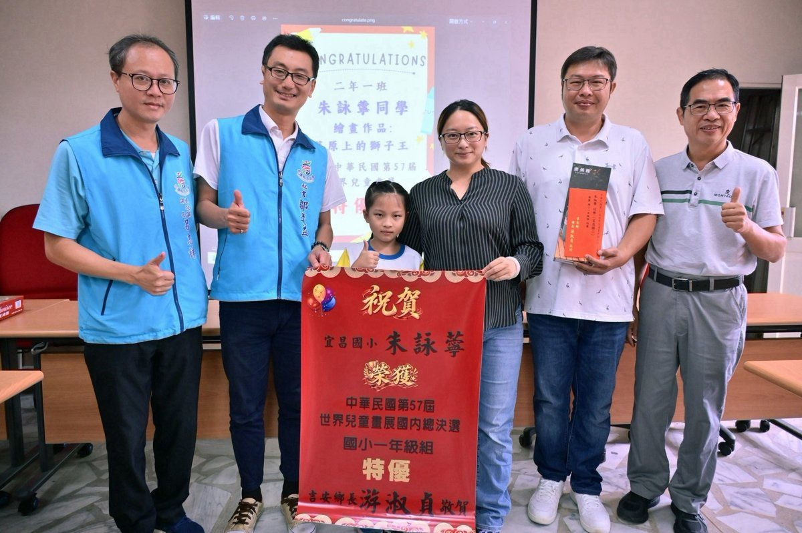
宜昌國小一年級學生朱詠薴榮獲第57屆世界兒童畫展國內總決選特優，吉安鄉長游淑貞親赴宜昌國小頒贈大紅榜與獎勵金，肯定學子多元藝術才華與學校基層扎根成果。…
閱讀全文 →